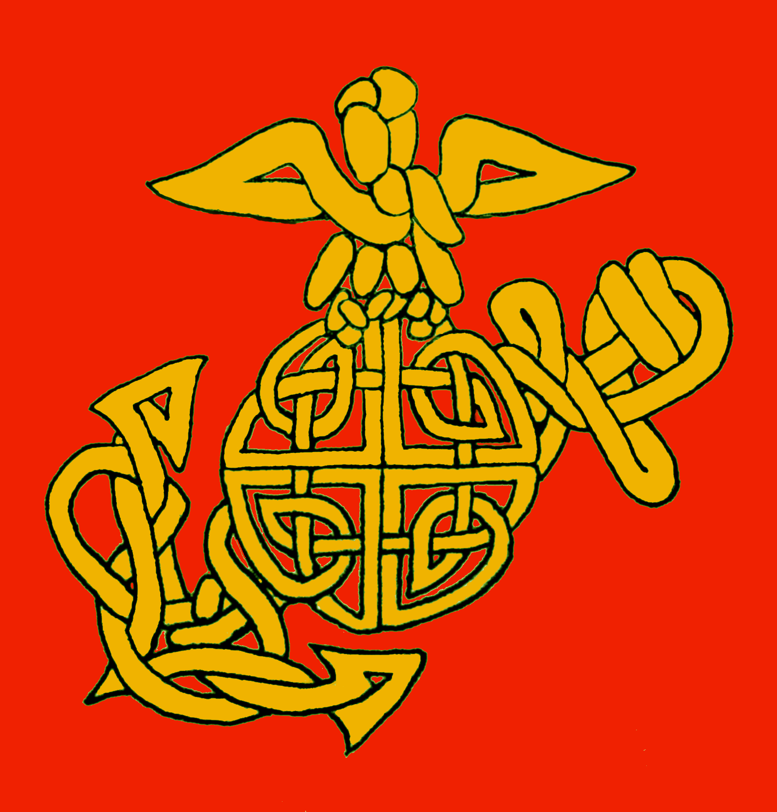

My life’s experience and history of collaboration in numerous altruistic endeavors, as well as in my professional career speak volumes. As a young Marine my leadership was recognized and promoted meritoriously. In 15 years in the Information Technology industry my roles always included solid communications skills utilizing concise information and empirical methodologies to maximize productivity in a team environment. Applying the no non-sense lessons of Marine Corps leadership with my humble upbringing has helped guide my way in recognizing the importance of a strong and cohesive team. Virtues like Esprit de Corps, Duty, Honor, Sacrifice and not least of all Courage, live in me to this day. Guiding principles applied to my life in a holistic manner. A post service BA in History at an institution with a focus on Interdisciplinary Study rounds out my love of humanity with my inner nerd. Though inherently a shy person, as a “military brat” I changed quite a few public schools prior to High School. That experience forced me out of my introspective shell and into the bright light of day. Coupled with an undeniable rite of passage in the Marine Corps, it helped build a strong sense of self-esteem, allowing me to engage others in effective, humble and enlightening ways.
